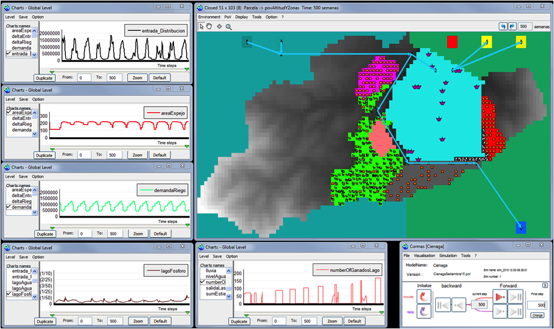

Cienaga
(Page uniquement disponible en Espagnol et en Anglais - English)Cantidad y cualidad del dique Ciénaga, Jujuy, Argentina
G. Leclerc (gregoire.leclerc@cirad.fr),
P. Bommel
 © Foto Bosque Modelo Jujuy
© Foto Bosque Modelo JujuyEste modelo híbrido está desarrollado en el marco del proyecto EcoAdapt.

EcoAdapt es un proyecto de investigación-acción en tres territorios de América Latina: Argentina, Bolivia y Chile. El proyecto procura incidir en procesos de gestión del agua que aporten al desarrollo local y reduzcan la vulnerabilidad de las poblaciones humanas al cambio climático, a través del fortalecimiento de capacidades, el intercambio de conocimientos, la prevención y mitigación de conflictos, y promoviendo el trabajo conjunto con actores claves locales y nacionales. Esta financiado por el 7º Programa Marco de Investigación y Desarrollo de la Comisión Europea.
Motivación
 |
Este modelo fue desarrollado para el caso de las cuencas hidrográficas Jujuy (Argentina), uno de los tres sitios de estudio del proyecto. Esta área de estudio es un Bosque Modelo: una plataforma de diálogo entre múltiples actores, basada en el concepto de desarrollo humano sostenible, cuyo objetivo es la planificación concertada de la gestión del territorio. Bosque Modelo Jujuy es una asociación civil que realiza acciones y ejecuta proyectos con el propósito de contribuir al manejo integral de los recursos naturales de la cuenca Los Pericos- Manantiales, provincia de Jujuy, al norte de la Argentina. |
El principal objetivo de EcoAdapt es mejorar la capacidad de las comunidades locales, políticos y científicos a participar en interdisciplinario de investigación-acción para aumentar su capacidad colectiva para adaptarse al cambio climático. El proyecto se basa en dos premisas: 1) la adaptación al cambio climático no es algo que se pueda hacer de forma aislada, y 2) la gestión basada en los ecosistemas es una base sólida para una adaptación exitosa al cambio climático en América Latina.
Antecedentes
El
interés de desarrollar un modelo multi-agente salio de los
procesos se aprendisaje desarrollado en el proyecto, donde se
identifico el Turismo como una entrada para federar los
intereses de varios actores, para luego poder desarrollar
acciones de adaptación al cambio climático. El área
protegida de los Diques tiene un gran interés turístico y
ecológico. Sin embargo el área sufre de una falta de
información, coordinación y de liderazgo, y el no respeto de las
reglas que rigen el área protegida.
Un modelo multi-agente permite integrar información de varias
fuentes, además de integrar las lógicas de los diversos actores
que son parte del territorio, lo que facilita el dialogo y la
toma de decisiones acerca de la gestión sostenible de los
recursos naturales en la zona. El modelo integra
conocimiento local con información climatica, hidrologica, de
calidad de agua, y de riego.
Este
modelo se enfoca en el lago artificial del dique La ciénaga en la
provincia de Jujuy, un área de gran atractivo turistico. El lago
es alimentado principalmente por los canales de
abastecimiento desde el Río Grande (El Tipal) y el Rio Perico, y
por la escorrentía superficial por quebradas de la pequeña cuenca
del mismo. Por otra parte el lago suministra agua para dos áreas
agrícolas abajo donde se practica el riego.
El primer desafío para el manejo del dique es mantener un nivel
satisfactorio de agua en el lago para alimentar la ciudad próxima
en agua potable y abastecerlas zonas de riego, dependiendo de las
condiciones climáticas y los cambios en los caudales de los ríos.
El segundo desafío es mantener una calidad del agua satisfactoria,
tanto para abastecer la ciudad, sino también para mantener la vida
acuática. Esta calidad también atrae a los turistas que disfrutan
del lugar al mismo tiempo que contribuyen a su degradación. Las
mayoría de las casas y restaurantes en los alrededores del lago no
tienen tratamiento alguno de aguas negras que van directamente en
el lago. Es destacable también la presencia de vacas y caballos en
los pastizales que crecen cuando baja el nivel del lago.
Descripción y características del modelo
A continuación se describe de manera sintética los componentes del modelo: el espacio, la estructura del modelo, la implementación.
El espacio
La
cuenca está dividida en parcelas de 400 m2 y también en areas y
zonas de habitaciones y usos. El sistema de canales esta
representados de manera simplificada.

Estructura del modelo
El diagrama UML siguiente muestra la estructura general del modelo:

Hay 3 tipos de actores: el productor de ganado, los habitantes (con tasa de crecimiento anual cuale depende de cada zona) y los turistas.
El agua está representada por la entidad VolumenAgua que contiene tres atributos: el volumen efectivo, la cantidad de nitrato y fósforo. Estos objetos se asignan a diversos elementos del paisaje: el lago, las secciones de canal y las compuertas de distribución. Cuando un VolumenAgua recibe o pierde agua, las concentraciones se actualizan automáticamente. Las curvas hipsométricas del lago fueron estimadas en base a sondeos.
En la clase Ambiente, el attributo 'lluviasDiarias' contiene 30 años de datos de lluvia de la zona que sirven como variable de control en las simulaciones. Estas lluvias fueron generadas por el simulador en base a parámetros climáticos derivados de series diarias la estación de ABMJ San Antonio (sin embargo el usuario puede cargar otras series diarias via una interfaz). Los caudales semanales proveniente del Tipal y del Perico fueron simulados en base a la lluvia diaria, pero también se pueden cargar datos de caudal de otra fuente via la interfaz de inicialización (ver abajo).
Se uso la demanda de agua de riego proveida por xx (ref), sin embargo se puede cambiar via la interfaz de inicialización (ver abajo).
Implementación
El modelo multi-agente, desarrollado en la plataforma CORMAS, puede simular los efectos a corto y largo plazo de la gestión del agua, en base a un paso temporal de semanal.
Inicialización
Al inicio de una simulación, se solicita al usuario de elegir algunos elementos de la configuración inicial (numero de casas en cada zona de la cuenca), y los parámetros relacionados con la dinámica del sistema: tasa de crecimiento anual y variables de control (archivos de 30 años datos: precipitación, caudal del rio Grande y demanda de riego)

La interfaz de inicialización
Indicadores
Los siguientes indicadores han sido implementados:Usando la interface de simulación se obtienen resultados dinámicos (ubicación de los actores, espejo de agua, indicadores) como lo muestra las figuras siguientes.

Algunos resultados para 12 años de simulación
El Gif siguiente ilustra algunos meses de simulación:

Resultados de 30 años de simulación (clima basado en los 30 últimos años), suponiendo dinámicas tales como aparecen en la interfaz de inicialización:
- Evolución del nivel de agua del lago

- Diferencia entre la entrada y la salida del agua en el lago

- Diferencia entre la oferta y la demanda de agua en las zonas de riego

- Contaminación del Lago

Uso del modelo
Debido a la falta de datos, el modelo no ha sido totalmente calibrado, sin embargo tiene una gran utilidad para entender la importancia de los factores y de la interrelación entre ellos. Por ejemplo, es la demanda de agua de riego, principalmente, que permite renovar el agua del lago y asi mantener su calidad. Al cambiar esta demanda puede tener efectos positivos o negativos sobre la calidad del agua. También el equilibrio es frágil y se debería reducir la cantidad de ganado que accede al lago, asimismo imponer normas para el tratamiento de las aguas de las casas y restaurantes.Se presentó el modelo al intendente del área protegida de Los Diques, quien le vio una gran utilidad para el dialogo entre actores para la búsqueda de reglas concertadas de gestión. El propuso que se podría recolectar las heces del ganado antes de que suba el nivel del lago, como una medida preventiva al alcance de la municipalidad de El Carmen, mientras se negocian acuerdos con los ganaderos.
Se prevé presentar el modelo al nuevo Intendente (que entro en función en diciembre 2015) para seguir desarrollándolo a través de una colaboración con la universidad de Jujuy y un financiamiento por el fondo de small grant del FME.
Para más información, contactar el autor.